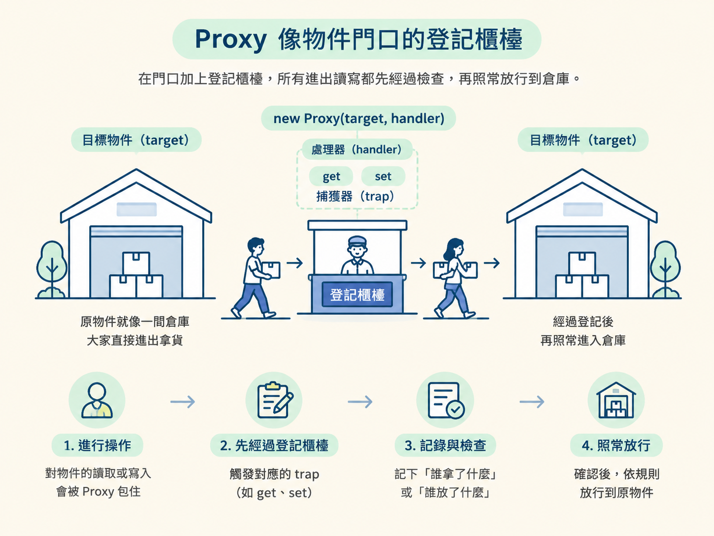
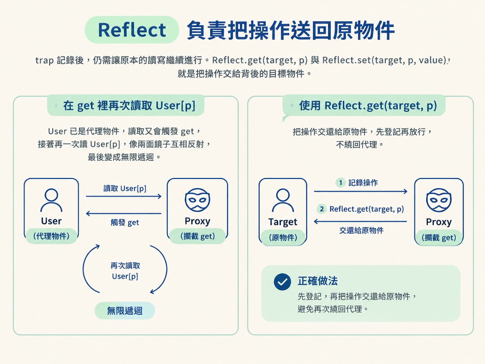
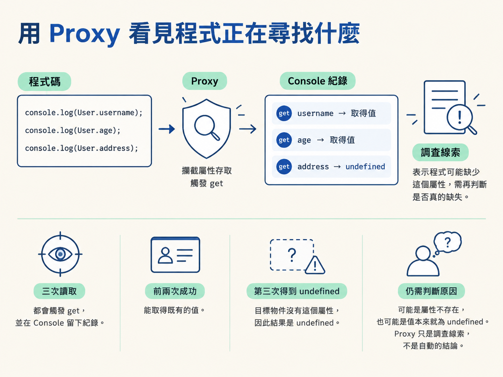

理解如何用 new Proxy 的 get 與 set 攔截物件讀寫，並從程式嘗試存取的屬性，判斷補環境時可能缺少哪些內容。
處理網站資料時，通常會先嘗試直接抓取。遇到反爬機制後，才會進一步觀察網站如何產生參數、檢查環境，並開始逆向相關程式碼。
到了補環境這一段，問題常常不是「某個函式做了什麼」，而是「這包程式到底碰了哪些瀏覽器物件」。壓縮過的程式碼可能讀取 window.screenX、navigator.userAgent，也可能存取你從未注意過的屬性。
如果已經知道目標，替單一函式或屬性加上 hook 很有效。但現在連屬性名稱都不知道，一個個 hook 就像拿手電筒逐間找人，範圍太大，也很容易漏掉。
這時可以替整個物件套上一層代理。之後所有經過代理的讀取與寫入，都會先通過你指定的邏輯。這個工具就是 Proxy。它能留下讀寫紀錄，也能協助你找出程式期待、但目前環境裡沒有的屬性。
前置條件：你需要先理解物件屬性的讀寫方式，例如 obj.prop 與 obj.prop = v，並具備 JavaScript 原型鏈的基本概念。
Proxy 是 JavaScript 的內建物件。它會包住另一個物件，這個被包住的物件稱為目標物件，也就是 target。
建立代理時，還要提供一個處理器 handler。處理器裡可以放入多種攔截方法，這些方法稱為捕獲器，也就是 trap。當對應的操作發生時，相關 trap 就會被呼叫。
可以把原物件想成一間倉庫，平常大家直接進出拿貨。套上 Proxy 之後，就像在門口設置登記櫃檯。人與貨仍然進出原本的倉庫，但每次經過門口時，都可以先記下「誰拿了什麼」或「誰放了什麼」，再決定是否照常放行。

最常用的兩個 trap 是 get 與 set。前者攔截屬性讀取，後者攔截屬性寫入。把下面的範例放進 DevTools Console 執行，就能直接看到每次操作留下的紀錄：
//创建user对象
var User = {
username: "bobo",
age: 20
}
//创建代理对象，Proxy的参数1：被代理对象。参数2：处理器
User = new Proxy(User, {
//target:被代理对象。p:属性。receiver：代理后的对象就是User
get(target, p, receiver) {
console.log(`获取属性${p}操作`)
//返回代理对象的p属性值
return Reflect.get(target, p);
},
set(target, p, value, receiver) {
console.log(`设置属性${p}操作`)
Reflect.set(target, p, value);
}
});
console.log(User.username);
console.log(User.age);
User.username = "Jay"
User.age = 18
console.log(User.username);
console.log(User.age);new Proxy 的第一個參數是被代理的物件，第二個參數則是處理器。建立完成後，變數 User 指向代理物件，而不是直接指向原本的物件。
讀取 User.username 時，會先進入 get(target, p, receiver)。其中 target 是原本的物件，p 是被讀取的屬性名稱，receiver 則是接到這次操作的代理物件。
執行 User.age = 18 時，則會進入 set(target, p, value, receiver)。除了屬性名稱之外，value 也帶著準備寫入的新值。
trap 記完紀錄之後，通常仍要讓原本的讀寫繼續進行。範例中的 Reflect.get(target, p) 與 Reflect.set(target, p, value)，就是把操作交給背後的目標物件。
這裡最容易踩到的陷阱，是在 get 裡再次讀取 User[p]。因為 User 已經是代理物件，這次讀取會再次觸發 get，接著又讀一次 User[p]，像兩面鏡子互相反射，最後變成無限遞迴。
使用對應的 Reflect.*，可以避免操作重新繞回代理。實務上，可以把這種寫法理解成「先登記，再把操作交還給原物件」。

Proxy 在補環境時最有價值的地方，不只是記錄正常讀寫，而是讓原本躲在壓縮程式碼裡的屬性存取浮上檯面。
下面的範例依序讀取 username、age，最後再讀取沒有定義的 address：
//创建user对象
var User = {
username: "bobo",
age: 20
}
User = new Proxy(User, {
get(target, p, receiver) {
console.log(`获取属性${p}操作`)
return Reflect.get(target, p);
},
set(target, p, value, receiver) {
console.log(`设置属性${p}操作`)
Reflect.set(target, p, value);
}
});
console.log(User.username);
console.log(User.age);
console.log(User.address);執行後，三次讀取都會觸發 get。前兩次能取得既有的值；讀取 address 時，目標物件沒有這個屬性，因此結果是 undefined。
這筆紀錄透露了一件重要的事：執行中的程式曾經向 User 詢問 address。如果後續程式依賴這個值，就可能需要補上對應的屬性。
不過，看到 undefined 時仍要判斷原因。它可能代表屬性不存在，也可能是屬性本來就存在，只是值恰好為 undefined。Proxy 提供的是調查線索，不是自動完成的結論。

把同樣的觀念套到 window 或 document，就能理解 Proxy 為什麼適合補環境。
當一大包程式碼開始執行，它對代理物件的讀寫會陸續經過 trap。你可以從日誌看見它嘗試存取哪些屬性，再檢查目前環境是否真的提供這些內容。
原本的做法像是憑空猜測「瀏覽器環境可能缺什麼」；套上 Proxy 後，則是讓程式親自留下需求清單。它讀了什麼、在哪裡得到空值，都會成為下一步調查與補環境的依據。
| 情境 | 較適合的工具 | 原因 |
|---|---|---|
| 已經知道要觀察哪個函式或屬性 | 單點 hook | 目標明確，紀錄較集中，也比較容易追蹤呼叫內容。 |
| 不知道程式會讀寫哪些屬性 | Proxy |
可以從整個物件的存取紀錄中找出線索。 |
| 需要找出補環境可能缺少的內容 | Proxy |
能看見程式曾經要求哪些屬性，以及哪些讀取沒有取得預期值。 |
| 程式持有原始物件，沒有經過代理 | Proxy 不適用 |
直接操作原始 target 會繞過處理器，trap 不會收到通知。 |
| 程式不是一般讀寫，而是檢查屬性描述符或呼叫函式 | 改用其他 trap | get 與 set 只能處理對應的讀寫操作。 |
Proxy 攔截的是透過代理物件發生的操作。如果某段程式碼仍持有原始 target 的引用，並直接對原物件讀寫，就會像繞過倉庫櫃檯的側門一樣，不留下任何代理紀錄。
另一個邊界是操作類型。這一節使用的 get 與 set，只負責一般的屬性讀寫。有些網站會使用 Object.getOwnPropertyDescriptor 或 Object.defineProperty 處理屬性描述符，也可能把函式當成代理目標，攔截一般呼叫或 new。這些情況需要其他 trap，光靠 get 與 set 並不完整。
Proxy用new Proxy(target, handler)在物件外加上一層代理。handler裡的 trap 負責攔截操作，其中get觀察讀取，set觀察寫入；對應的Reflect.*則把操作交還給目標物件，避免再次繞回代理。單點 hook 適合已知目標，Proxy 則適合目標尚未明朗、需要觀察整個物件的情況。放在補環境的脈絡裡，它就像一具雷達：不替你直接決定要補什麼，但能顯示程式正在尋找哪些屬性。
因此，Proxy 可以接在前面的 hook 觀念之後：兩者都在攔截操作，差別在觀察範圍與入口。下一節會把六個常用 trap 整理成一份目錄，讓屬性描述符、函式呼叫與建構操作也能找到各自對應的攔截點。